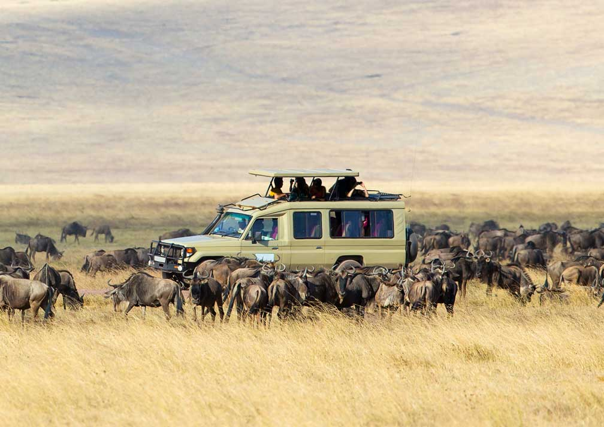
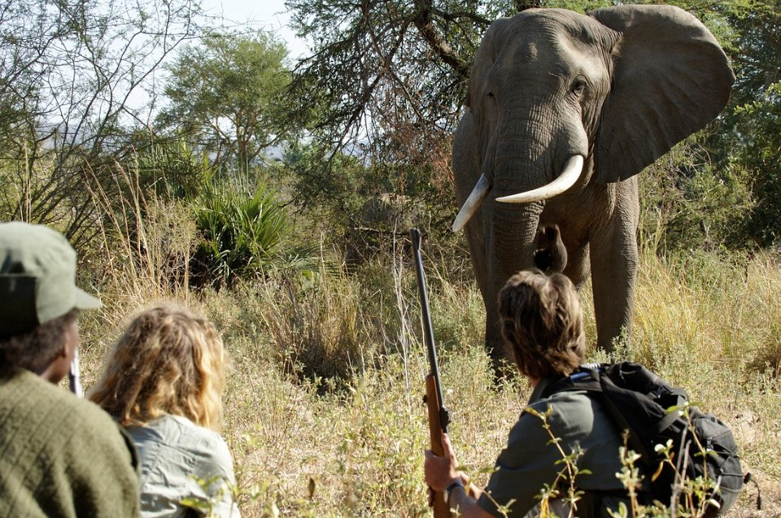
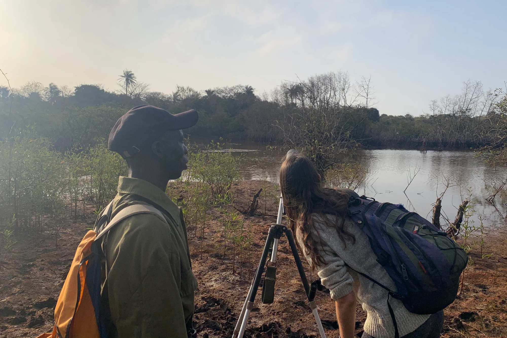
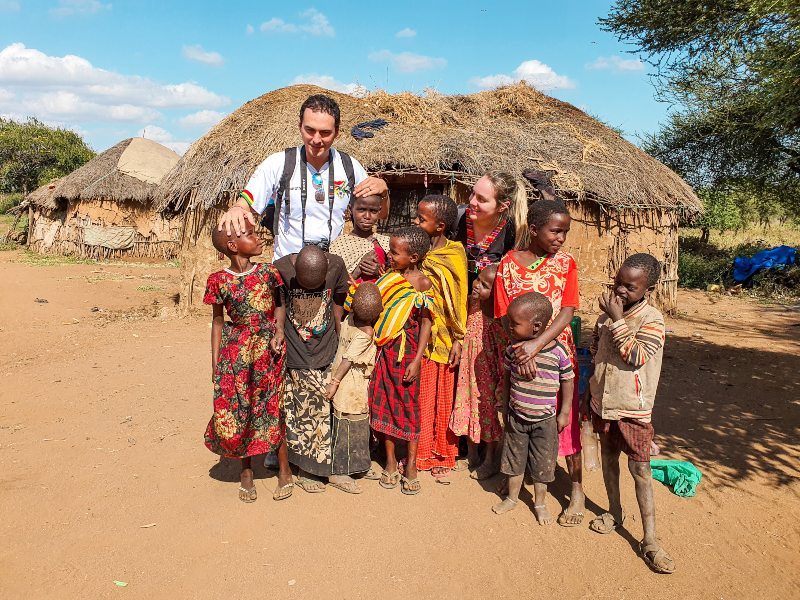
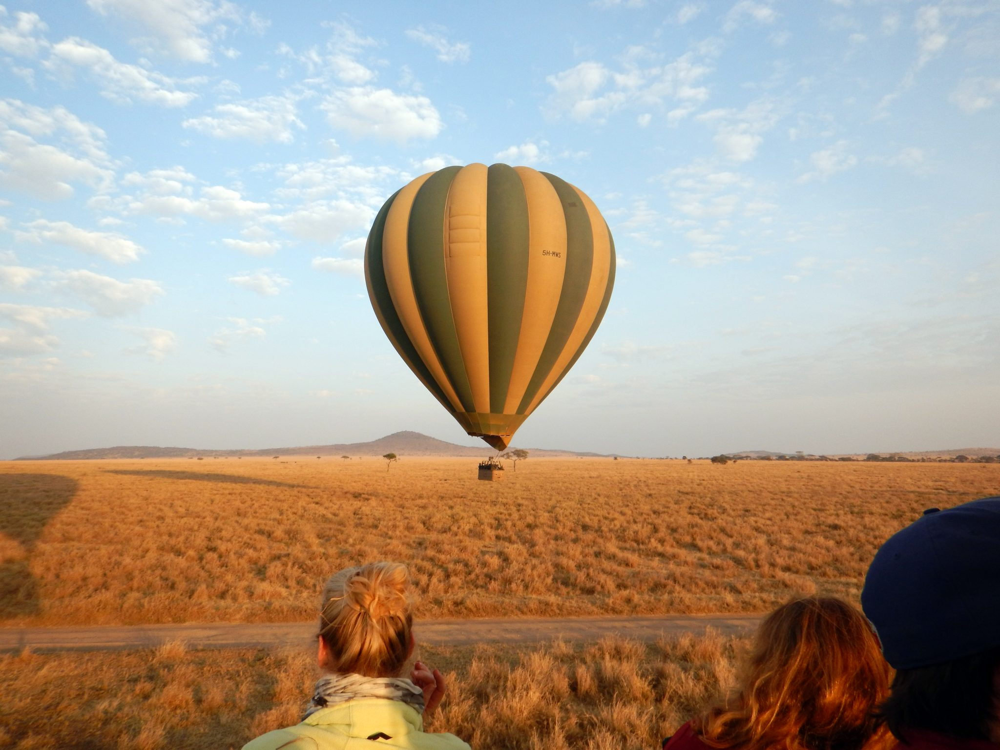
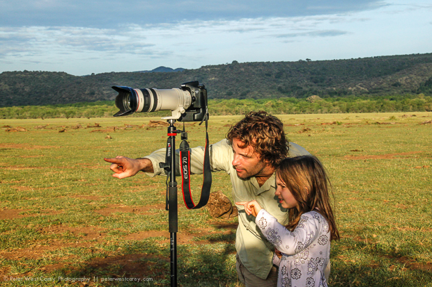

Las actividades que allí tienen lugar
La Reserva Natural del Serengeti ofrece una gran cantidad de actividades emocionantes para los
visitantes. La observación de la vida silvestre es la actividad principal y los visitantes pueden
hacer safaris en jeep, en globo aerostático o incluso a pie, con la guía de expertos en vida
silvestre. También es posible visitar a los masai y aprender sobre su cultura y estilo de vida. Los
paseos en globo aerostático son una de las experiencias más populares en la reserva, permitiendo a
los visitantes observar la vida silvestre desde una perspectiva única y disfrutar de vistas
impresionantes del paisaje. Además, hay una variedad de opciones de alojamiento disponibles en la
reserva, desde campamentos básicos hasta lujosos lodges.
La Reserva Natural del Serengeti es un destino turístico popular en África, conocido por su abundante
vida silvestre y belleza natural. Aquí hay algunas de las actividades más comunes que los visitantes
pueden realizar en la reserva:

Safari en vehículo: Los safaris en vehículo son la forma más popular de explorar
la reserva. Los
visitantes
pueden contratar guías locales para que los lleven en vehículos abiertos todo terreno y recorran
las
llanuras del Serengeti en busca de animales salvajes.

Safari a pie: Para aquellos que buscan una experiencia más cercana a la
naturaleza, los safaris a
pie
son
una excelente opción. Los visitantes pueden unirse a guías locales que los llevarán a caminar
por el
Serengeti para ver la fauna y la flora de cerca.

Observación de aves: La Reserva del Serengeti es el hogar de más de 500 especies
de aves, lo que
la
convierte en un destino ideal para la observación de aves. Los visitantes pueden contratar guías
locales
para que los lleven a través de la reserva y les ayuden a identificar diferentes especies de
aves.

Visita a la aldea masai: Los Masai son una tribu indígena que habita en la
reserva. Los
visitantes
pueden
visitar una aldea Masai cercana para aprender más sobre su cultura, tradiciones y estilo de
vida.

Globo aerostático: Los globos aerostáticos son una forma emocionante de ver la
reserva desde
arriba.
Los
visitantes pueden contratar viajes en globo aerostático temprano en la mañana y volar sobre las
llanuras del
Serengeti mientras el sol sale.

Fotografía de la vida silvestre: Los visitantes también pueden tomar fotos de la
abundante vida
silvestre
que se encuentra en la reserva. Los guías locales pueden ayudar a los visitantes a encontrar los
mejores
lugares para tomar fotos y compartir consejos sobre fotografía de vida silvestre.
La Reserva Natural del Serengeti ofrece una gran cantidad de actividades emocionantes para los visitantes. La observación de la vida silvestre es la actividad principal y los visitantes pueden hacer safaris en jeep, en globo aerostático o incluso a pie, con la guía de expertos en vida silvestre. También es posible visitar a los masai y aprender sobre su cultura y estilo de vida. Los paseos en globo aerostático son una de las experiencias más populares en la reserva, permitiendo a los visitantes observar la vida silvestre desde una perspectiva única y disfrutar de vistas impresionantes del paisaje. Además, hay una variedad de opciones de alojamiento disponibles en la reserva, desde campamentos básicos hasta lujosos lodges.
La Reserva Natural del Serengeti es un destino turístico popular en África, conocido por su abundante vida silvestre y belleza natural. Aquí hay algunas de las actividades más comunes que los visitantes pueden realizar en la reserva:
Estas son solo algunas de las actividades que los visitantes pueden disfrutar en la Reserva Natural del Serengeti. Hay muchas más actividades para elegir y cada una de ellas ofrece una experiencia única e inolvidable.